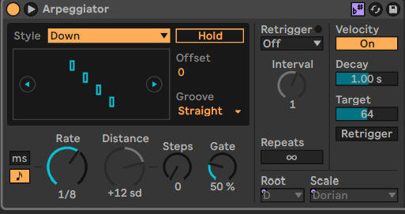
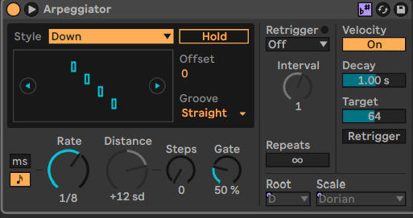

IMMERSION MUSICALE VIRTUELLE
Épreuve sythèse de programme

PROJET FIN D'ÉTUDES
description
IMMERSION
Expérience immersive en réalité virtuelle dans laquelle le joueur/utilisateur peut explorer un petit monde.
AUDIO
Apprendre à utiliser une station de travail audio-numérique (STAN) telle qu'Ableton pour réaliser le son.
INTERACTION
Le monde contient plusieurs stations auxquelles on peut faire jouer des extraits musicaux et faire réagir l'environnement au rythme de la piste musicale
ÉMOTION
Le but est de multiplier l'émotion transportée par la musique afin que l'utilisateur soit complètement immergé dans l'expérience unique.
PROCESSUS
étapes de réalisation
RECHERCHE
À l'aide de mon projet de recherche réalisé la session dernière, ainsi qu'une multitude de tutoriels et de sites de documentation, j'ai récupéré l'information nécessaire à la réalisation du projet.


Les principales fonctionnalités recherchées dans les tutoriels étaient, d'abord, comment utiliser le logiciel Ableton Live pour composer des pistes audio. Ensuite, j'ai regardé plusieurs vidéos pour que mon projet de réalité virtuelle soit bien optimisé pour le Quest 3 et afin qu'il ait des interactions simples et intuitives avec les différents objets dans la scène.

Les images ci-dessus représentent les deux principales vues du logiciel auquel j'ai rapidement du me familiariser, car j'étais doublement limité dans le temps. D'abord par la remise du projet imminent ainsi, que l'essai gratuit ne durant que 30 jours. Toutefois, ces deux vues sont elles-mêmes composées de plusieurs panneaux modulables.


Ici, par exemple, en cliquant sur la piste bleu clair on développe le panneau des MIDI (Musical Instrument Digital Interface), dans lequel on peut placer des notes. Ensuite, on peut choisir quel instrument virtuel (VST) va jouer ces notes. Finalement, on peut appliquer une variété d'effets pour obtenir le son souhaité. Dans l'image ci-dessous, j'ai utilisé l'effet Arpegiator pour découper mes accords.
 

Le travail ne s'arrête pas là! Avant de commencer, il faut d'abord paramétrer le projet selon nos besoin. Une fois satisfait de notre composition, il faut aussi choisir les options d'exportations adéquates. De plus, il existe aussi les fonctions d'automatisation, qui consistent en des courbes de bézier qui permettent de modifier le volume ou autres effets appliqués sur une piste dynamiquement.


CONCEPTION CRÉATIVE
Apprendre à utiliser une station de travail audio-numérique (STAN) telle qu'Ableton pour réaliser le son.
PRODUCTION
Le monde contient plusieurs stations auxquelles on peut faire jouer des extraits musicaux et faire réagir l'environnement au rythme de la piste musicale
PROGRAMMATION
Pour que l'expérience immersive fonctionne correctement, il a été nécessaire d'écrire quelques scripts.
La partie la plus complexe du code est dédiée au bon fonctionnement du son, puisque mon projet a pour but d'apprendre à utiliser un logiciel de création audio. La programmation du son repose sur quelques scripts interconnectés qui gèrent de manière efficace le tout.
À l'aide de cette seule fonction et d'une liste publique de fichiers audio, il est possible de créer du son depuis n'importe quel script. En paramétrant correctement l'appel de la fonction, il est possible de réaliser bien des choses avec.

Le script est placé sur un GameObject quelconque ayant une AudioSource. On peut d'abord faire jouer des sons 2D depuis cet objet.
De plus, il est possible de jouer un son 3D à l'endroit où l'on le désire simplement en plaçant le Transform du GameObject parent en paramètre.

Avec cette astuce, j'ai modifié les noms des tableaux apparaissant dans l'éditeur en spécifiant que le script doit être lu avant même le démarrage.


Ensuite, à l'aide des scripts placés sur les instruments, le gestionnaire Beat et le script pulsation, on choisit aléatoirement un son à jouer, paramètre le bon BPM, récupère la source audio créée dynamiquement et glisse les objets qu'on veut faire vibrer au rythme de la piste.
PRÉSENTATION
Afin de facilement présenter mon projet et d'éviter les imprévus lors du jour de la présentation, je vais utiliser cette page web hébergée sur GitHub Pages.
Le site prend la forme d'une seule page défilable pour conserver une simplicité de navigation et l'attention de l'utilisateur à l'essentiel. De plus, le tout est adaptatif pour qu'il soit accessible à toutes les tailles d'écrans.
Auteur
artisan du chef-d'œuvre

« En plus d'être un athlète sportif, gêné mais bavard, souriant, mais un peu endormi par moments, je suis présent à l'ensemble des cours! »
Clovis Gauthier
Finissant TIM 2025
Rétrospective
Ces trois ans au TIM ont passé beaucoup plus vite que prévu. Comment ça, c'est déjà fini!? Malgré les cours parfois interminables et les nuits passées à remettre des TP à la dernière minute, j'ai passé de bons moments bien accompagné au collège.
Je me suis découvert une affinité pour la programmation, surtout en web, et des difficultés en 3D, néanmoins je suis satisfait des opportunités d'apprentissage dans plusieurs domaines que le TIM m'a offerts.

Si c'était à refaire...
Dans un monde où je n'ai pas encore commencé mon projet, je me dirais de changer légèrement le but de mon projet pour qu'il y ait moins de recherches à faire, me donnant ainsi la possibilité d'approfondir sur un élément précis.
De plus, j'ai définitivement sous-estimé l'impact que la fatigue en fin de parcours allait avoir sur ma motivation (en plus d'être fiévreux pendant une semaine...)
Bref, je me suis senti embourbé dans les détails, les paramètres et les imprévus pour, au final, obtenir un résultat qui ne reflète pas la quantité de travail derrière le projet. Malgré cette légère déception, je reste tout de même fier de ma réalisation.
Résultat
& présentation
SCÈNE
L'immersion prend place dans le néant sur un tourne-disque géant. (toujours dans la thématique!)
STATIONS
Différentes ambiances propices à différents sons, dans lesquelles on retrouve les instruments.

INSTRUMENTS
En interagissant avec les objets, on peut faire jouer différentes pistes audio.